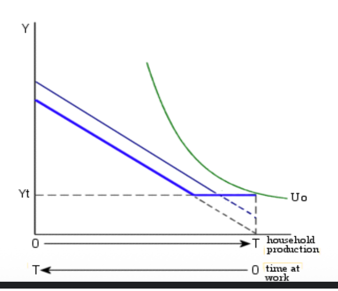
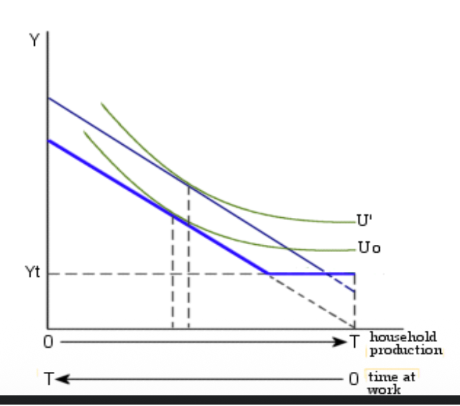
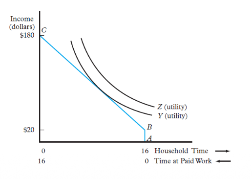
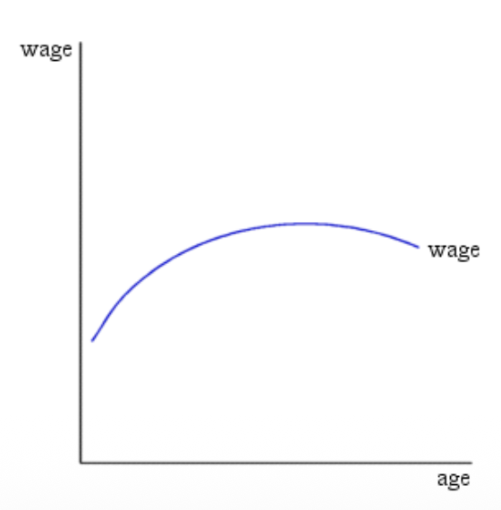
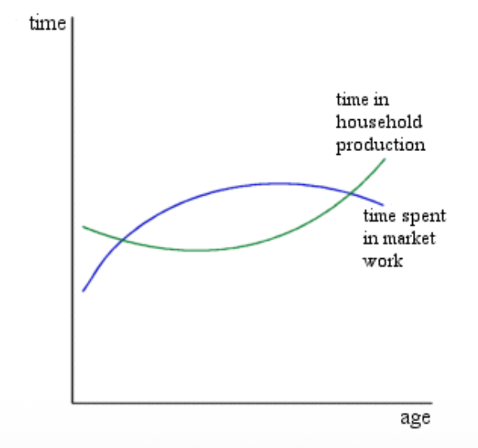
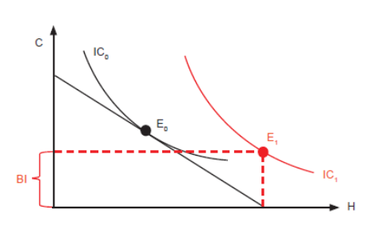

Labour Supply: The Basic Neoclassical Model
⏳ I. The Basic Neoclassical Model
The neoclassical model of labor supply analyzes how individuals decide to allocate their fixed amount of time between work (labor) and non-work (leisure).
Fundamental Assumptions
- The Labour-Leisure Trade-off: Time is a finite resource. Every hour spent working is an hour lost for leisure.
- Utility Maximization: Individuals are rational actors who choose the combination of work and leisure that maximizes their total satisfaction (Utility).
The Demand for Leisure
Leisure is treated as a normal good. Its demand depends on:
- Preferences: Personal tastes for time vs. money.
- Wealth/Income: As total wealth increases, individuals generally demand more leisure (the "Income Effect").
- Opportunity Cost: For someone already working, the cost of an extra hour of leisure is exactly the wage rate ($W$) they give up by not working.
⚖️ II. Substitution and Income Effects
When the wage rate changes, it triggers two distinct and often opposing psychological and economic forces.
1. Substitution Effect (SE)
As the wage increases, the opportunity cost of leisure rises. Leisure becomes more "expensive" relative to consumption.
Reaction: The individual substitutes leisure for work to take advantage of the higher reward.
(Where $H$ is hours, $W$ is wage, and $Y$ is utility/income held constant)
2. Income Effect (IE)
As the wage increases, the individual's total real income rises for the same amount of effort. They feel "richer".
Reaction: Since leisure is a normal good, the individual wants to consume more of it and work less.
(Where $H$ is hours, $Y$ is income, and $W$ is wage held constant)
The Net Effect
Usually, both effects happen simultaneously but in opposite directions. The final change in hours worked depends on which effect is stronger:
- If SE > IE: Hours worked increase (common at lower wages).
- If IE > SE: Hours worked decrease (common at very high wages).
📈 III. The Backward-Bending Labour Supply Curve
Graph: Individual Labour Supply Curve

1️⃣ Lower Part (Rising): Initially, as the wage increases, the Substitution Effect dominates. The individual is incentivized to work more because the cost of leisure is high. ($W \uparrow \implies H \uparrow$).
2️⃣ Turning Point ($W_0$): At a certain wage level, the individual hits a "satisfaction" plateau where the two effects begin to balance out.
3️⃣ Upper Part (Bending backward): At very high wages, the Income Effect dominates. The individual is so wealthy that they value their free time more than additional money. ($W \uparrow \implies H \downarrow$).
Visualizing the Income-Leisure Tradeoff

Point L (High work) vs Point N (Extreme wealth, high leisure).
🧠 IV. Preferences & Utility Maximization
1. Indifference Curves ($U = U(Y, L)$)
An indifference curve shows all combinations of Real Income ($Y$) and Leisure ($L$) that provide the same level of utility.
- Downward Sloping: To get more leisure, you must sacrifice income.
- Convexity: The more leisure you have, the less income you are willing to give up for even more leisure (Diminishing Marginal Utility).
Comparing Preferences

(a) Steep curve = High value on leisure. (b) Flat curve = Low value on leisure (Workaholic).
2. The Constraints
Time Constraint
The total time ($T$) is fixed (usually 16 hours/day excluding sleep).
Goods/Budget Constraint
Spending on goods ($pY$) must equal wages earned ($wH$).
The Full-Income Constraint
Combining the two equations gives the maximum earnings potential ($wT$):
This shows that Full Income equals the cost of goods plus the implicit cost of leisure.
Time Allocation Graph

Budget Constraint (Slope -w/p)

3. Optimal Choice
Utility is maximized at the point of tangency between the highest possible indifference curve and the budget constraint.

🏃 V. Participation & Reservation Wage
Corner Solution
When an individual decides not to work at all ($H=0$). This occurs if the utility of leisure is always higher than the utility of the income offered by the market.

Reservation Wage ($W_R$)
This is the minimum wage required for a person to enter the labor force. It represents the value the individual places on their "last hour" of leisure.
- $W_{Market} > W_R$: The person works.
- $W_{Market} < W_R$: The person stays out of the labor force.


💼 VI. Nonlabour Income & Policy Impact
1. Nonlabour Income ($A$)
Nonlabour income (rent, lottery, dividends) shifts the budget constraint vertically upward without changing the slope (wage).

Pure Income Effect: Since the individual is richer but the reward for working hasn't changed, they will always increase leisure and decrease work.

2. Welfare and Incentives
The Welfare Trap
A basic welfare system guarantees an income ($Y_t$). If the individual works, the benefits are reduced dollar-for-dollar. This creates a Marginal Wage of zero.
- Incentive Problem: Individuals may leave the labor force as they can reach a higher utility curve ($U_1$ instead of $U_0$) with zero work.


🏠 VII. Household Production & Lifecycle
The Household Production Model
Time isn't just "Leisure vs. Work". Much of non-market time is spent on Domestic Production (cleaning, cooking, childcare). Families make joint decisions based on Comparative Advantage.
- Specialization: The member with the highest market wage (Absolute Advantage) or the lowest domestic opportunity cost (Comparative Advantage) should specialize in market work.

Lifecycle Wage Profile
Real wages typical follow a bell curve over a person's life: rising as human capital accumulates and falling after peak productivity.

Lifecycle Labour Allocation
Individuals work more when wages are high (middle age) and spend more time on leisure/home production when wages are low (youth, retirement).

📉 VIII. Recessions: Added vs. Discouraged Workers
- Discouraged Worker Effect: During deep recessions, some people stop looking for work because the probability of finding a job is too low. They "vanish" from the labor force stats (Hidden Unemployment).
- Added Worker Effect: One spouse may enter the labor market or increase hours because the other spouse just lost their job (maintaining household income).
Note: The discouraged worker effect usually dominates, meaning the Labour Force Participation Rate decreases during recessions.
🌍 IX. Unconditional Basic Income (UBI)

Positives: administrative simplicity, financial security, higher utility.
Negatives: Expensive, reduced incentive to participate (reservation wage rises). Many low-wage earners might quit if the UBI is close to their salary.
💡 Exam Strategy: SE vs IE
If you are asked about a tax increase, treat it as a wage decrease. If you are asked about an inheritance, treat it as an increase in Nonlabour Income (Pure IE, no SE!).